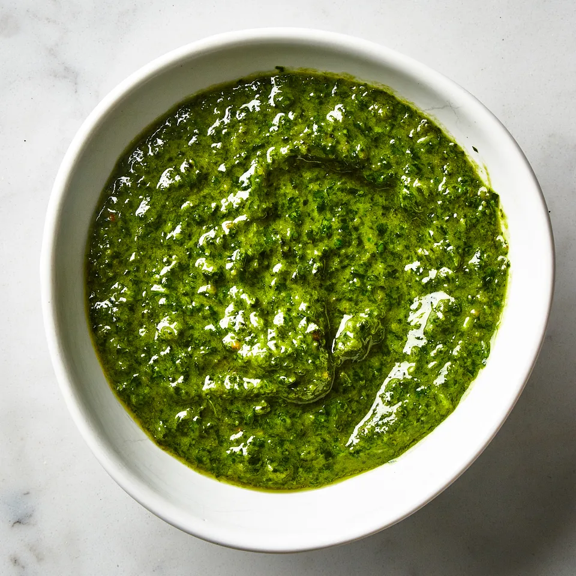

Basic Pesto
Easy pesto for a busy family

Pesto is a mouthful of bright summer — basil made more so. You can buy it in a jar or in the refrigerator section of your grocery store, but there is nothing better than making it yourself. Fresh basil can be found in abundance at farmers’ markets in the summer. Just clean, take the stems off and throw the leaves in a food processor with nuts and garlic. Dribble in the oil and you’ve got a versatile sauce for pasta, chicken or fish.
Ingredients
- 2 cups fresh basil
- 2 tbsp pine nuts or walnuts
- 4 cloves garlic
- 1/2 cup EVOO
- 1/2 cup freshly grated Parmesan
Preparation
-
Combine basil leaves, pine nuts (or walnuts) and garlic in a food processor and process until very finely minced.
-
With the machine running, slowly dribble in the oil and process until the mixture is smooth.
-
Add the cheese and process very briefly, just long enough to combine. Store in refrigerator or freezer.